Flash your noisebox
Web Serial firmware installer for M5Cardputer-Adv
Your browser doesn't support Web Serial. Use desktop
Chrome, Edge, or Opera. Safari and Firefox don't work.
1. Plug in
Connect your Cardputer-Adv to this computer with a USB-C cable. It should appear as a serial device.
2. Pre-fill device config (optional)
Typing a relay ID on the Cardputer's micro-keyboard is no fun. Fill these here and the flasher writes them straight into the device's NVS — first boot will skip the "Relay setup" screen and jump to the bind code.
Stays in your browser. The values are written to your Cardputer over USB and never sent to any server. Both fields are not Telegram secrets — your friend who runs the relay can hand them to you publicly. Leave blank to type them on the device.
3. Connect & flash
4. After flashing
- The device boots into a splash screen — press enter.
- Pick your Wi-Fi network and enter the password.
- Relay setup: type your bot token (from @BotFather) and your relay domain. Both are saved on the device — you won't be asked again.
- The device shows a 6-digit code. In Telegram DM your bot:
/pair NNNNNN.
Full setup walkthrough: README → Quick start.